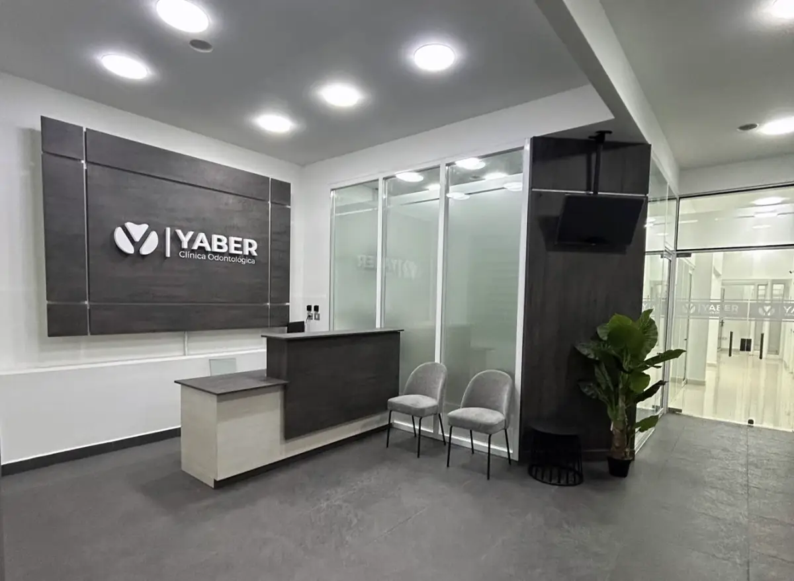
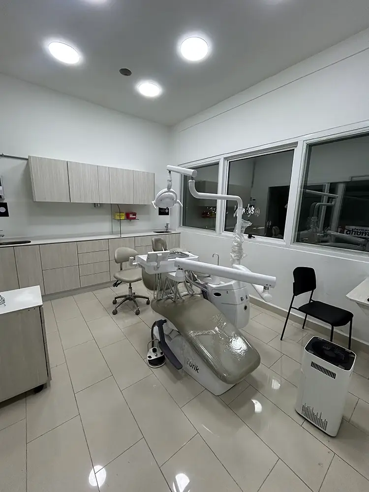
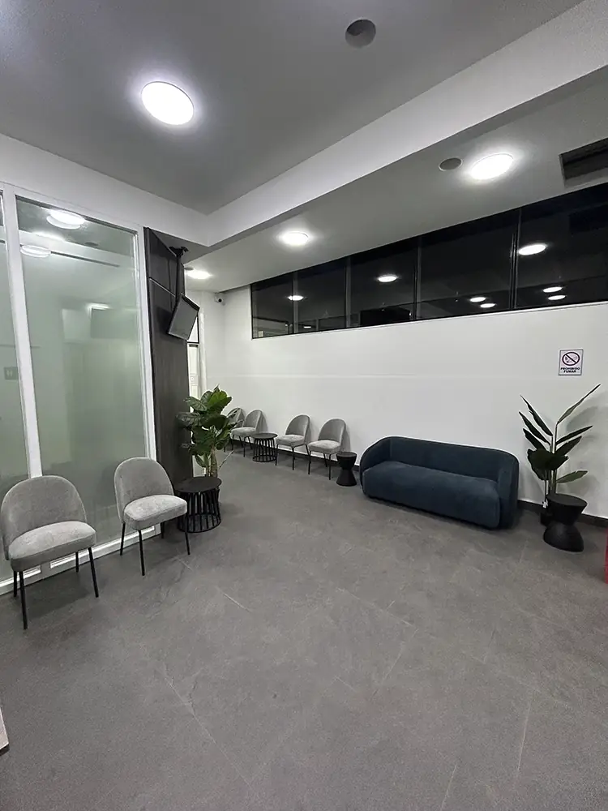
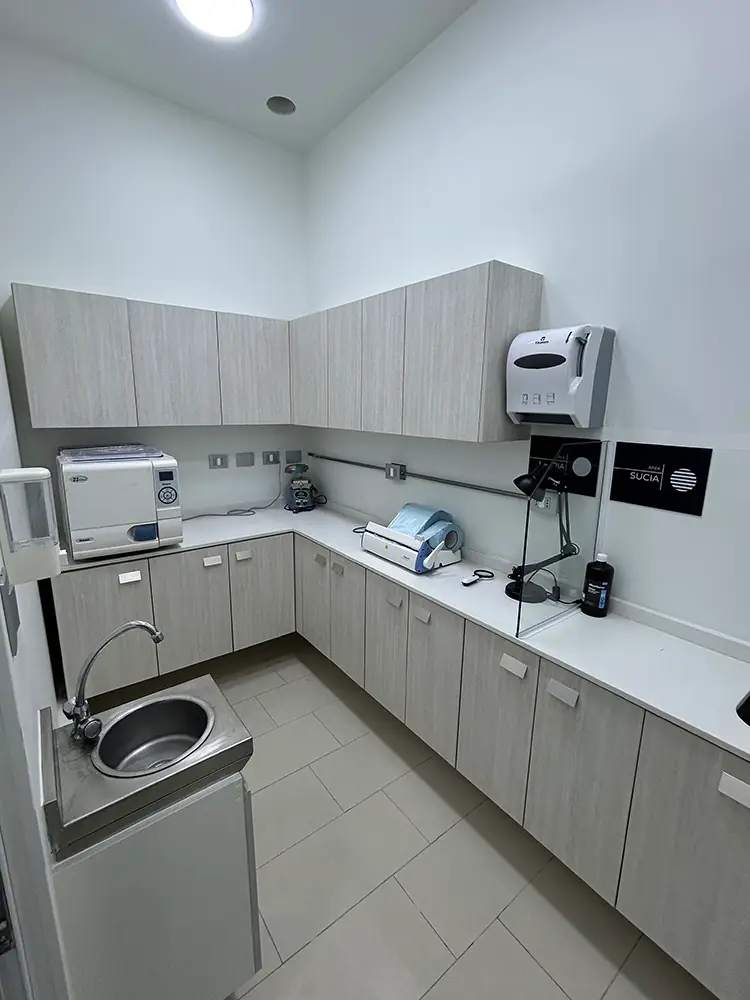
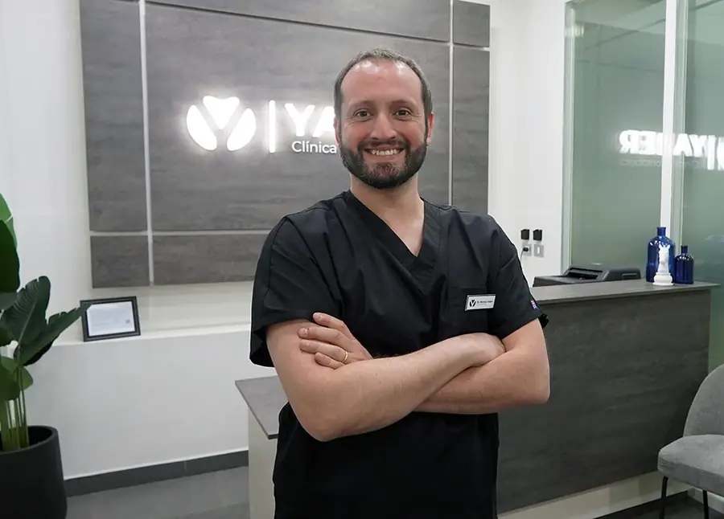

San Miguel · Paseo Vial, 2.º piso
Clínica dental en San Miguel, a pasos del metro Lo Vial.
Todas las especialidades, radiografías y pabellón en el mismo piso. La primera evaluación con dentista general es sin costo.

Su primera hora
La primera evaluación no se cobra.
Así es la primera visita, igual para cualquier tratamiento.
- 01
Evaluación
Un dentista general revisa su boca y escucha qué le molesta o qué quiere mejorar. Sin costo.
- 02
Radiografía, si hace falta
Se toma en la misma clínica, sin ir a otro centro. Panorámica $15.500.
- 03
Diagnóstico claro
Le explican qué tiene y qué opciones hay, sin apuro y sin asustarlo.
- 04
Plan y presupuesto
Sale con el plan por escrito y, si corresponde, con hora para el especialista. Hay cuotas sin interés.
Tratamientos
Lo que hacemos, en un solo lugar.
Cuidado de todos los días
Lo simple, y lo que evita tratamientos caros después.
Tratamientos que cambian su sonrisa
Planificados con calma, con el valor claro desde la evaluación.
La clínica
Todo el tratamiento sin salir del Paseo Vial.
Radiografías y cone beam, pabellón de cirugía y scanner intraoral en la misma clínica, así no tiene que ir a otro centro para terminar su tratamiento.
- Radiografías digitales en la clínica, desde $5.000.
- Pabellón de cirugía menor y sedación con óxido nitroso.
- Scanner intraoral: sin las pastas de impresión de antes.
- Clínica autorizada por la Seremi de Salud.




El equipo
Dieciocho profesionales, cada uno en su día.
La clínica la fundó el Dr. Yaber, con raíces en San Miguel. Hoy atienden dentistas generales de lunes a sábado y especialistas en días fijos.
Dentistas generales
- Vicente Rosse · lunes y miércoles
- Karen Alvarado · martes y sábado
- Francisco Pavez · jueves y viernes
- Ramiro Ojeda · sábado, también estética facial
Niños
- Romina Zúñiga · viernes
Ortodoncia e implantes
- Alexander Schumilo · martes en la tarde
- Ariel Salinas · martes en la tarde
«Creo que es primera vez que me hablan como persona y no como un presupuesto.»Paciente · reseña en Google
Dudas
Preguntas frecuentes
¿La primera evaluación tiene costo?
No. La evaluación con dentista general es sin costo: revisan su caso, le explican el tratamiento y le entregan el presupuesto.
¿Puedo ir directo con un especialista?
Sí. La hora directa con el especialista lleva un abono previo de $10.000, que se descuenta del valor final del tratamiento.
¿Atienden con Fonasa o isapre?
Por ahora la atención es solo particular: no hay convenios con Fonasa ni isapres.
¿Se puede pagar en cuotas?
Sí, hay cuotas sin interés; depende de cada caso y lo ve la administración. También se paga con débito, crédito, efectivo o transferencia.
¿Dónde estaciono?
En el mismo Strip Center Paseo Vial: el estacionamiento es gratis en los niveles -2 y -3.
¿Atienden los feriados?
Sí, se atiende normal los feriados, salvo los irrenunciables: 1 de enero, 1 de mayo, 18 y 19 de septiembre y 25 de diciembre.
Cómo llegar
Gran Avenida 4311, a pasos del metro Lo Vial.
Dirección
Gran Avenida José Miguel Carrera 4311, local 206, 2.º piso (Strip Center Paseo Vial), San Miguel.
Metro
A pasos de las estaciones Lo Vial y San Miguel, línea 2.
Estacionamiento
Gratis en los niveles -2 y -3 del Paseo Vial.
Horario
| Lunes a jueves | 9:30 a 19:45 |
| Viernes | 10:30 a 18:30 |
| Sábado | 9:30 a 18:30 |
| Domingo | Cerrado |
WhatsApp y teléfono
Formas de pago
Débito, crédito, efectivo y transferencia. Cuotas sin interés según el caso. Atención solo particular.
Reserve su hora
Le mostramos las horas disponibles al momento.
Escríbanos por WhatsApp y le ofrecemos horas reales de la agenda, o reserve usted mismo la evaluación en línea.